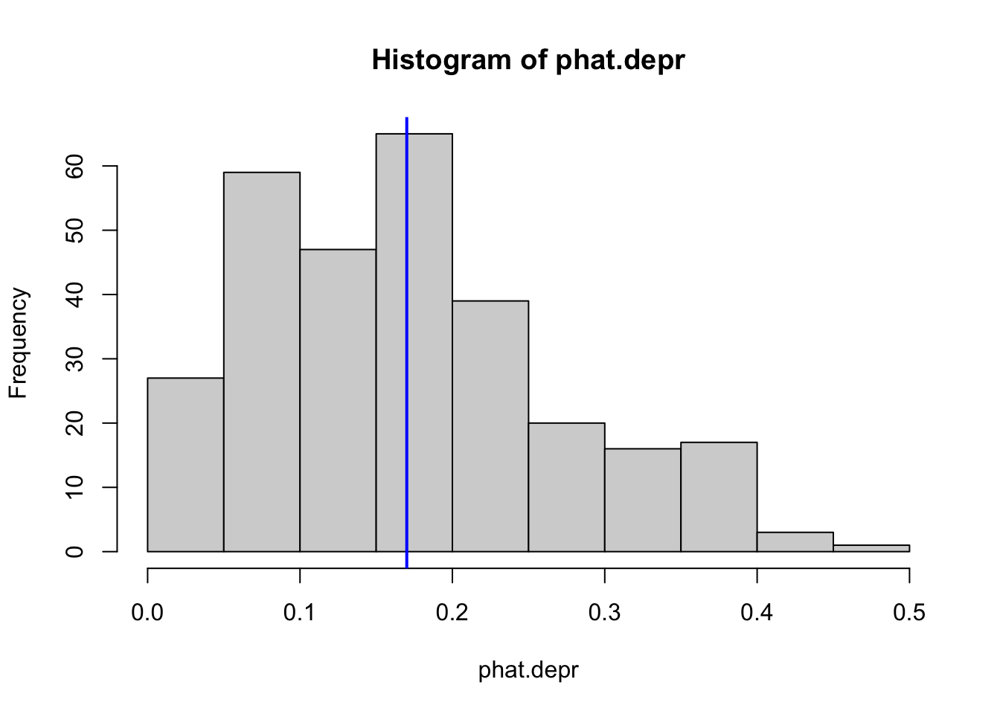
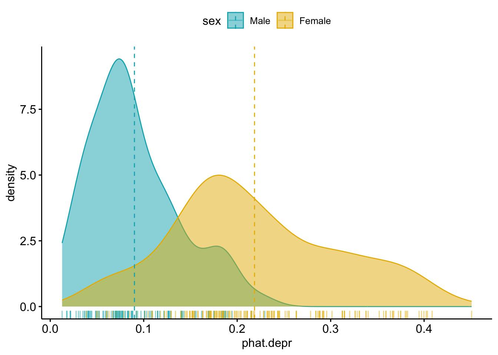

This chapter uses the following packages: ROCR to create ROC curves, caret package to create a confusion matrix, ggpubr for some nicer plots, pander, and the cleaned ‘depression’ data set.
12.1 Predicted Probabilities
Sometimes Odds Ratios can be difficult to interpret or understand.
Sometimes you just want to report the probability of the event occurring.
Or sometimes you want to predict whether or not a new individual is going to have the event.
For all of these, we need to calculate \(p_{i} = P(y_{i}=1)\), the probability of the event. Back solving the logistic model for \(p_{i} = e^{\beta X} / (1+e^{\beta X})\) gives us the probability of an event.
Consider the main effects model of depression on age, income and sex from Section 11.4.4
Estimate
Std. Error
z value
Pr(>|z|)
(Intercept)
-0.6765
0.5788
-1.169
0.2425
age
-0.02096
0.00904
-2.318
0.02043
income
-0.03656
0.01409
-2.595
0.009457
sexFemale
0.9294
0.3858
2.409
0.016
(Dispersion parameter for binomial family taken to be 1 )
Null deviance:
268.1 on 293 degrees of freedom
Residual deviance:
247.5 on 290 degrees of freedom
The predicted probability of depression is calculated as: \[
P(depressed) = \frac{e^{-0.676 - 0.02096*age - .03656*income + 0.92945*sex}}
{1 + e^{-0.676 - 0.02096*age - .03656*income + 0.92945*sex}}
\]
Notice this formulation requires you to specify a covariate profile. In other words, what value X take on for each record. Often when you are only concerned with comparing the effect of a single measures, you set all other measures equal to their means.
Let’s compare the probability of being depressed for males and females separately, while holding age and income constant at the average value calculated across all individuals (regardless of sex).
Plug the coefficient estimates and the values of the variables into the equation and calculate. \[
P(depressed|Female) = \frac{e^{-0.676 - 0.02096(44.4) - .03656(20.6) + 0.92945(1)}}
{1 + e^{-0.676 - 0.02096(44.4) - .03656(20.6) + 0.92945(1)}}
\]
The probability for a 44.4 year old female who makes $20.6k annual income has a 0.19 probability of being depressed. The probability of depression for a male of equal age and income is 0.086.
12.2 Distribution of Predicted probabilities
We know that not everyone in the data set is 44.4 years old and makes $20.6k annually (thankfully). So what if you want to get the model predicted probability of the event for all individuals in the data set? There’s no way I’m doing that calculation for every person in the data set.
We can use the predict() command to generate a vector of predictions \(\hat{p}_{i}\) for each row used in the model.
Min. 1st Qu. Median Mean 3rd Qu. Max.
0.01271 0.08352 0.16303 0.17007 0.23145 0.45082
hist(phat.depr) # base R histogramabline(v =mean(phat.depr), col ="blue", lwd =2) # add mean

The average predicted probability of showing symptoms of depression is 0.17.
12.2.1 Plotting predictions against covariates
Another important feature to look at is to see how well the model discriminates between the two groups in terms of predicted probabilities. Let’s look at a plot:
Any row with missing data on any variable used in the model will be dropped, and so NOT get a predicted value. So the tactic is to use the data stored in the model object.
Now that the predictions have been added back onto the data used in the model using cbind, we have covariates to use to plot the predictions against.
ggpubr::ggdensity(model.pred.data, x="phat.depr", add="mean", rug =TRUE, color ="sex", fill ="sex", palette =c("#00AFBB", "#E7B800"))

Think about it
What do you notice in this plot?
What can you infer?
12.3 Predicted Class (outcome)
To classify individual \(i\) as being depressed or not, we draw a binary value (\(x_{i} = 0\) or \(1\)), with probability \(p_{i}\) by using the rbinom function, with a size=1.
set.seed(12345) #reminder: change the combo on my luggageplot.mpp <-data.frame(pred.prob = phat.depr, pred.class =rbinom(n =length(phat.depr), size =1, p = phat.depr),truth = dep_sex_model$y)head(plot.mpp)
Not Depressed Depressed
Not Depressed 195 35
Depressed 49 15
The model correctly identified 195 individuals as not depressed and 15 as depressed. The model got it wrong 49 + 35 times.
The accuracy of the model is calculated as the fraction of times the model prediction matches the observed category:
(195+15)/(195+35+49+15)
[1] 0.7142857
This model has a 71.4% accuracy.
Think about it
Is this good? What if death were the event?
12.4 Confusion Matrix
A confusion Matrix is the 2x2 table that compares the predicted classes to the true classes.
table(plot.mpp$pred.class, plot.mpp$truth)
Not Depressed Depressed
Not Depressed 195 35
Depressed 49 15
This table was generated by drawing a random Bernoulli variable with probability \(p_{i}\). This assumes that probabilities can range from [0,1], but if you look at the plots above, the predicted probabilities max out around 0.5.
Often we adjust the cutoff value to improve accuracy. This is where we have to put our gut feeling of what probability constitutes “high risk”. For some models, this could be as low as 30%. It’s whatever the probability is that optimally separates the classes. This is an important tuning parameter because since the models we build are only based on data we measured, often there are other unmeasured confounding factors that affect the predicted probability. So our predictions don’t span the full range from [0,1].
Think about it
Using the above plots, where should we put the cutoff value? At what probability should we classify a record as “depressed”?
There are many different types of criteria that can be used to find the optimal cutoff value. But first we need to understand the expanded borders of a [Confusion Matrix]. Using the confusionMatrix function inside the caret package performs all these calculations for us.
Warning
You must specify what the ‘event’ is. This is also another place where the factor ordering of binary variables can cause headache. Another reason to control your factors!
We can dig into the perf.f1 object to get the maximum \(f1\) value (y.value), then find the row where that value occurs, and link it to the corresponding cutoff value of x.
The Area under the Curve (auc) also gives you a measure of overall model accuracy.
auc <-performance(pr, measure='auc')auc@y.values
[[1]]
[1] 0.695041
12.7 Model Performance
Say we decide that a value of 0.22828 is our optimal cutoff value to predict depression using this model. (note here is a GOOD place to use all the decimals.)
We can use this probability to classify each row into groups.
The assigned class values must match the data type and levels of the true value.
It also has to be in the same order, so the 0 group needs to come first.
I want this matrix to show up like the one in Wikipedia, so I’m leveraging the forcats package to reverse my factor level ordering.
We can calculate a confusion matrix using the similarly named function from the caret package.
Balanced Accuracy: \([(n_{11}/n_{.1}) + (n_{22}/n_{.2})]/2\) - This is to adjust for class size imbalances (like in this example)
F1 score: the harmonic mean of precision and recall. This ranges from 0 (bad) to 1 (good): \(2*\frac{precision*recall}{precision + recall}\) = 2*(.3247*.50)/(.3247+.50) = .3937